MISSION 01
접시와 식기 만들기
접시 · 납작한 원뿔을 복제하고, 복제한 원뿔을 조금 작게 만들어 구멍으로 파내요. 바닥은 남겨요.
포크 · 길쭉한 사각 도형에 짧은 사각 도형을 복제해 포크 날을 붙여요.
나이프 · 사각 도형 손잡이에 납작하게 늘린 구를 붙여 칼날을 만들어요.
숟가락 · 사각 도형으로 손잡이를 만들고, 납작한 구를 붙여 숟가락 머리를 만들어요.
설명은 짧게, 따라하기는 쉽게! 한 단계씩 눌러 보며 따라해요.
도형을 놓고 색을 바꿔요. 화면을 확대·회전·이동하는 방법을 익혀요.
도형을 옆으로 옮기고, 위로 올려요.
오른쪽 상자를 선택해요.
키보드 C를 눌러요.
오른쪽 상자를 왼쪽 상자 윗면으로 끌어요.
윗면이 초록색이면 마우스를 놓아요.
오른쪽 목록에서 바로 가져오면 크루즈가 켜져요.
다른 도형의 윗면으로 끌어 놓아요.
상자 4개를 점점 높은 위치로 옮겨 공중 계단을 만들어 보세요.
상자 3개를 빈틈없이 쌓아 탑을 만들어 보세요.
도형을 클릭하면 생기는 점을 끌어서 크기를 바꿔요.
검정 점을 끌면 가로 또는 세로 중 한 방향으로만 크기가 바뀌어요.
모서리의 흰 점을 끌면 가로와 세로를 자유롭게 바꿀 수 있어요. 높이는 그대로예요.
도형 위쪽 가운데의 흰 점을 위아래로 끌면 높이만 바뀌어요.
Shift를 누른 채 모서리의 흰 점을 끌면 같은 비율로 커지고 작아져요.
Alt를 누른 채 검정 점을 끌면 가운데는 그대로, 양옆으로 크기가 바뀌어요.
한쪽으로 커져요.
양옆으로 커져요.
가운데는 그대로예요.
오른쪽 아래 모서리의 흰 점을 클릭하면 가로·세로 치수가 나타나요. 숫자를 눌러 원하는 크기를 입력해요.
오른쪽 아래 모서리의 흰 점을 클릭해요.
가로와 세로 숫자를 각각 바꿀 수 있어요. 가로에 30을 입력해 봐요.
Enter를 누르면 가로가 30mm로 바뀌어요.
위쪽 가운데 흰 점을 클릭하고 높이 숫자를 입력한 뒤 Enter를 눌러요.
크기가 다른 원뿔 3개와 줄기, 별로 크리스마스 트리를 만들어 보세요.
숫자를 직접 입력해 아래 치수와 똑같은 의자를 만들어 보세요.
| 부품 | 개수 | 가로 | 세로 | 높이 |
|---|---|---|---|---|
| 좌석 | 1개 | 30 | 30 | 4 |
| 다리 | 4개 | 4 | 4 | 20 |
| 등받이 | 1개 | 30 | 4 | 20 |
위층으로 갈수록 작아지는 5층 탑을 만들어 보세요.
도형 여러 개를 그룹화하면 하나의 물체가 돼요!
그룹화하면 한 가지 색이 돼요. 원래 색으로 되돌리려면 솔리드를 눌러 여러 색 → 설정을 켜요.
솔리드 동그라미도 빨간색이에요.
솔리드 동그라미가 무지개색이 돼요.
상자와 구멍 원기둥을 함께 드래그해 선택한 뒤 그룹 아이콘을 눌러요.
붙어요
상자 위로 쑥 솟은 덩어리
뚫려요
상자가 뻥 파인 모양
벽에 윗부분이 둥근 아치형 문을 만들어 보세요.
상자와 원통 도형으로 아치형 문을 만들어 보세요.
문 모양을 구멍 도형으로 바꿔 벽과 그룹화하면 돼요.
여러 도형을 묶어 모자 쓴 눈사람을 만들고, 각 도형의 색을 유지해 보세요.
가운데가 뚫린 반지에 하트를 붙여 하트 반지를 만들어 보세요.
고리 구멍과 좋아하는 글자나 모양이 있는 나만의 키링을 만들어 보세요.
도형을 돌리고 눕혀 봐요. 돌리는 방향은 3가지예요!
도형을 선택한 뒤 회전 손잡이를 누르면 각도기와 각도가 나타나요.
상자를 선택하고 회전 손잡이를 끌어 옆으로 45° 돌려요.
Shift를 누른 채 돌리면 45°씩 회전해요.
원기둥을 선택하고 회전 손잡이를 끌어 앞쪽으로 90° 돌려요. Shift를 누르면 편해요.
원기둥을 선택하고 회전 손잡이를 끌어 오른쪽으로 90° 돌려요. Shift를 누르면 편해요.
회전 손잡이를 파란 각도기 바깥으로 끌면 1°씩 회전해요.
숫자를 회전해 각 면에 새긴 나만의 주사위를 만들어 보세요.
하나를 복제하고, 움직임을 반복해요.
준비: 새 상자 1개를 놓고 선택해요.
옮긴 상자가 선택된 상태에서 다시 복제해야 이동 거리가 반복돼요.
Ctrl ＋ D를 한 번 눌러요.
선택된 상자를 마우스로 오른쪽으로 끌어 놓아요.
빈 곳을 누르지 말고 Ctrl ＋ D를 다시 눌러요.
Ctrl ＋ D를 두 번 더 눌러요.
구를 찌그러뜨린 뒤 회전한 움직임을 반복해요.
구 1개를 길고 납작한 타원으로 만들어요.
Ctrl ＋ D로 복제한 뒤, 이동하지 않고 45° 돌려요.
선택한 채 Ctrl ＋ D를 두 번 더 눌러요.
도미노를 반복 복제해 같은 간격으로 세우고, 직선과 곡선이 이어지는 도미노 길을 만들어 보세요.
검은 점을 눌러 도형의 중심과 높이를 맞춰요.
아래쪽과 왼쪽의 가운데 점을 차례로 눌러요. 정렬된 점은 검정색에서 회색으로 바뀌어요.
두 도형을 드래그해서 선택하고 정렬을 눌러요.
도형 주변에 검정 점이 나타나요.
아래쪽 가운데 검정 점을 눌러요.
정렬되면 이 점이 회색으로 변해요.
왼쪽 가운데 검정 점도 눌러요.
정렬되면 이 점도 회색으로 변해요.
두 가운데 점이 모두 회색이면 중심이 맞았어요.
1단계에서 맞춘 탑과 길고 낮은 빨간 상자(담)로 연습해요.
주황색 원기둥과 빨간 담만 선택해요. 정렬을 누른 뒤 원기둥을 한 번 더 클릭하면 원기둥은 고정되고 담만 움직여요.
주황색 원기둥과 빨간 담만 함께 선택하고 정렬을 눌러요.
보라색 원뿔은 선택하지 않아요.
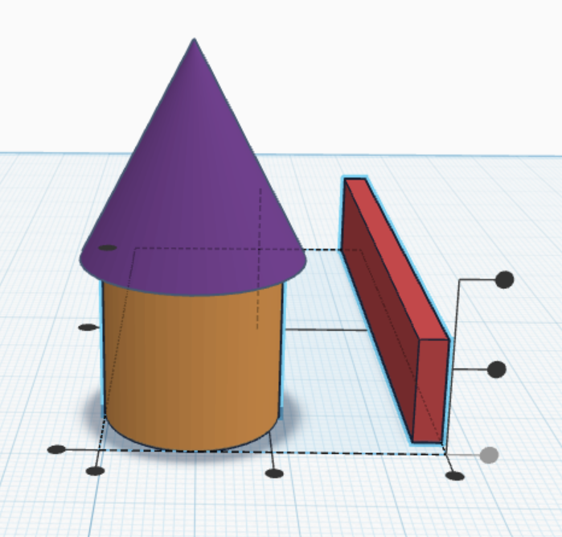
주황색 원기둥을 한 번 클릭하면 검정 점이 원기둥 주변으로 바뀌어요.
파란 동그라미의 오른쪽 하단 검정 점을 눌러요.
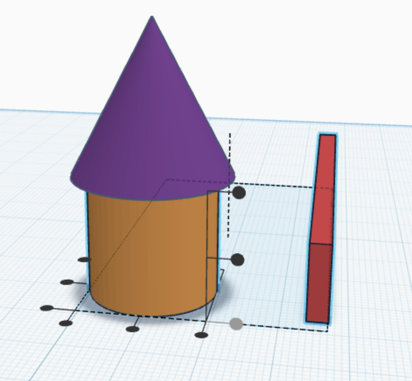
주황색 원기둥은 그대로 있고, 빨간 담만 움직여 원기둥 오른쪽에 맞춰져요.
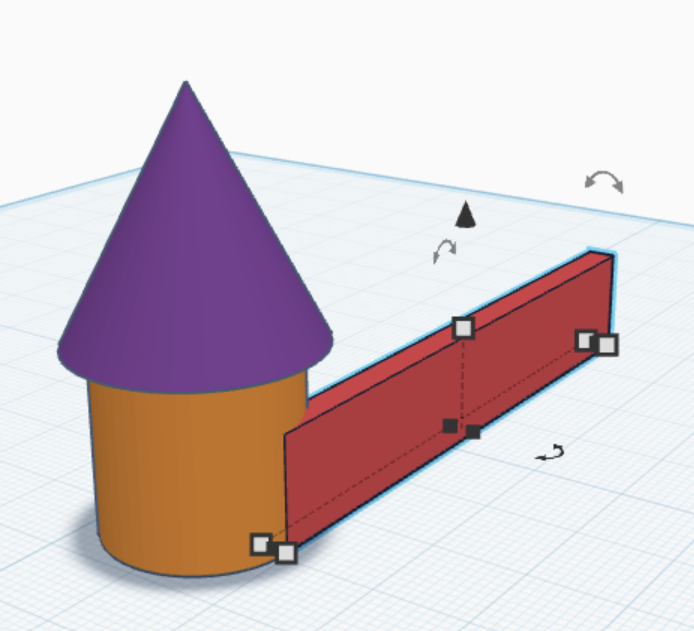
탑의 원뿔과 원기둥만 함께 선택하고 Ctrl ＋ D로 복제한 뒤 방향키로 옮겨 담 반대편 끝에 놓아요.
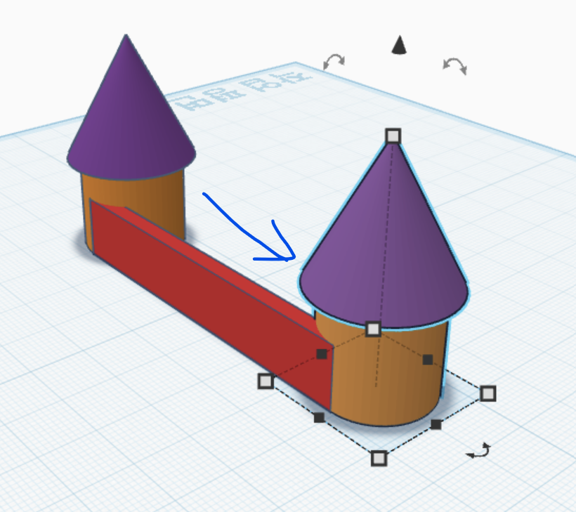
담을 복제해 90° 돌리고 탑도 복제해 연결해요. 방향키로 옮기면 편해요.
탑 4개와 담 4개로 성을 완성해요.
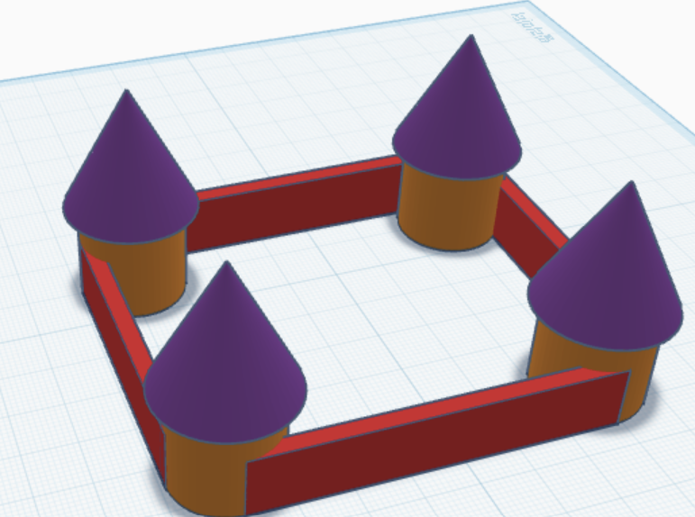
네모 도형 하나를 납작하게 만들어 성벽 앞에 놓고, 높이를 맞춰요.
이번에는 성벽을 기준 도형으로 정해요.
성벽과 네모만 함께 선택하고 정렬을 눌러요.
빨간 성벽을 한 번 클릭한 뒤, 높이 방향의 가운데 검정 점을 눌러요.
성벽은 그대로 있고 네모의 높이만 성벽 가운데로 맞춰져요.
가리는 도형을 선택하고 Ctrl + H로 숨겨요. 다시 보려면 Ctrl + Shift + H를 눌러요.
자료 속 고양이를 그대로 가져와요. 위쪽에 구멍 하나를 뚫으면 키링이 돼요.
고양이 그림 열기 → Download SVG를 눌러 1775543.svg를 저장해요. SVG를 받았다면 STEP 4로 가요.
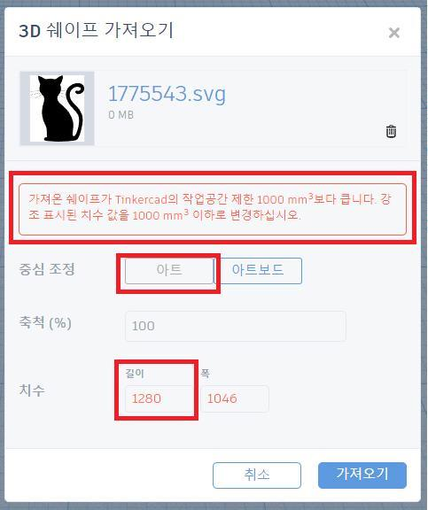
Convertio 열기 → 파일 선택 → 다운로드한 PNG를 골라요.
형식이 SVG인지 확인 → 변환 → 완료되면 다운로드를 눌러요.
틴커캐드 가져오기 → 파일 선택에서 고양이 SVG를 골라요. 길이를 50mm 정도로 줄여 가져오고, 몸체 두께를 3mm로 맞춰요.
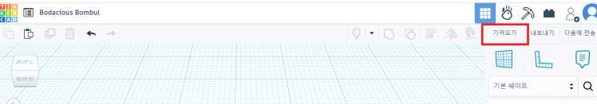
원기둥을 지름 4mm, 높이 6mm로 만들고 구멍으로 바꿔요. 고양이 머리 위쪽에 놓고, 가장자리에는 2~3mm를 남겨요.
고양이와 구멍 원기둥을 함께 선택 → 그룹화해요. 구멍이 바닥까지 뚫렸는지 확인해요.
문구를 만들고 → SVG로 가져오고 → 막대를 붙여요.
캔바 열기 → 디자인 만들기 → 텍스트에서 짧은 문구를 써요. 굵은 글꼴과 검정색을 골라요.
간격에서 글자 간격을 줄여요. 떨어진 글자와 자음·모음은 요소의 선·사각형으로 이어줘요.
공유 → 다운로드 → PNG로 저장해요. 투명 배경이 지원되면 선택해요.
Convertio 열기 → 파일 선택 → 다운로드한 PNG를 골라요.
형식이 SVG인지 확인 → 변환 → 완료되면 다운로드를 눌러요.
가져오기 → 파일 선택에서 SVG를 골라요. 가로 약 100mm, 두께 3mm로 맞춰요. 사각 배경이 들어오면 원본의 배경을 확인해요.
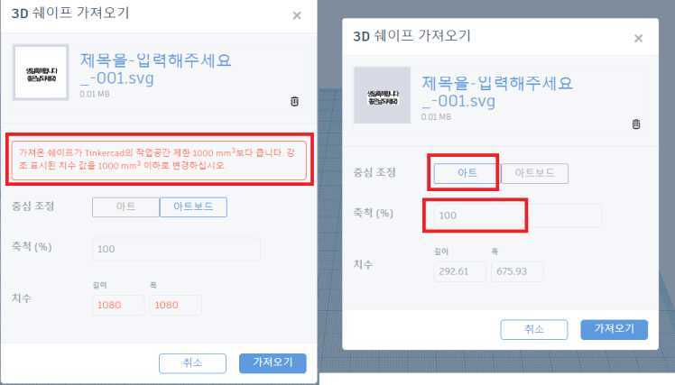
얇은 사각 도형으로 위아래 문구를 이어줘요. 길쭉한 막대를 만들고 문구와 충분히 겹치게 붙여요.
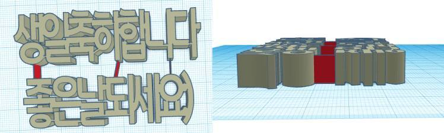
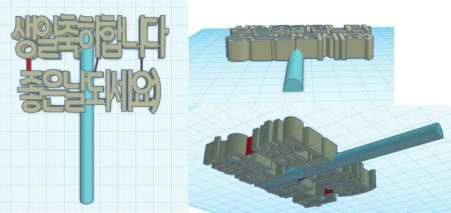
테두리와 글자를 만들고, 판과 손잡이를 붙여요. 그림의 순서대로 따라해요.
튜브를 가로·세로 30mm, 높이 1.5mm로 맞춰요. 벽 두께 1.5mm, 측면 64로 설정해요.
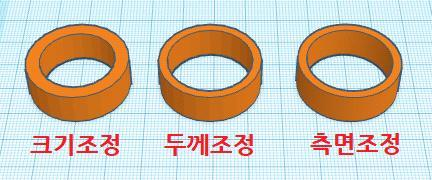
TEXT로 짧은 이름이나 문구를 써요. 높이를 테두리와 같은 1.5mm로 하고, 두 도형을 가로·세로 가운데 정렬해요.
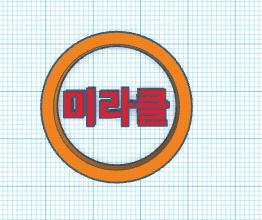
글자만 선택 → 대칭을 눌러, 위에서 본 글자의 좌우가 바뀌는 화살표를 눌러요. 찍었을 때 바르게 읽히도록 뒤집는 거예요.
테두리 위쪽에 작업 평면을 놓아요. 원기둥 30 × 30 × 2mm를 올리고, 가로·세로 가운데 정렬해요.
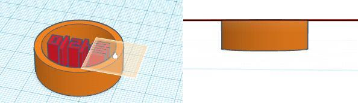
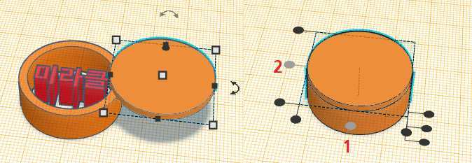
판 윗면에 작업 평면을 놓고 손잡이 도형을 올려요. 그림의 풀러를 찾기 어렵다면 원기둥과 구로 만들어도 돼요.
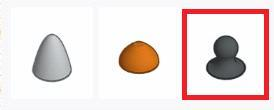
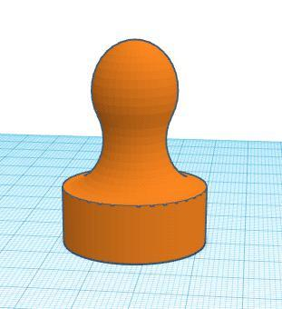
작업 평면을 원래 바닥으로 돌리고 모두 그룹화해요. 아래에서 봤을 때 글자가 반대이고, 글자와 테두리의 찍히는 높이가 같으면 완성!
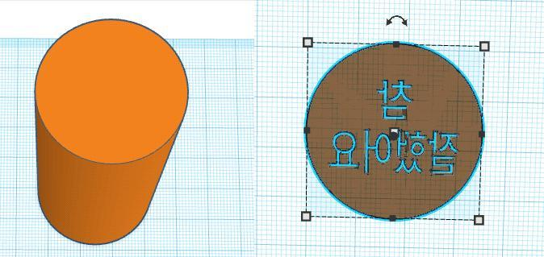
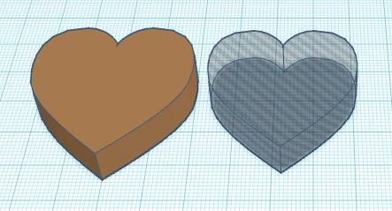
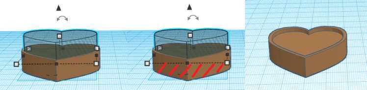
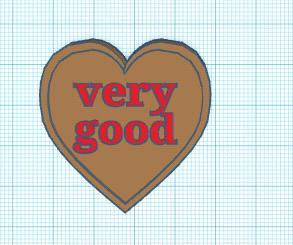
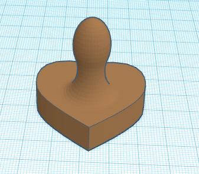
완성 그림을 보고 만들어 봐요. 도형 힌트를 참고하고 크기와 색은 자유롭게 정해요.
접시 · 납작한 원뿔을 복제하고, 복제한 원뿔을 조금 작게 만들어 구멍으로 파내요. 바닥은 남겨요.
포크 · 길쭉한 사각 도형에 짧은 사각 도형을 복제해 포크 날을 붙여요.
나이프 · 사각 도형 손잡이에 납작하게 늘린 구를 붙여 칼날을 만들어요.
숟가락 · 사각 도형으로 손잡이를 만들고, 납작한 구를 붙여 숟가락 머리를 만들어요.
완성 그림을 보고 만들어 봐요. 도형 힌트를 참고하고 크기와 색은 자유롭게 정해요.
도형 힌트 · 구로 사탕을 만들고, 가느다란 원기둥으로 막대를 붙여요. 납작한 원기둥을 가운데 둘러 장식해요.
완성 그림을 보고 만들어 봐요. 도형 힌트를 참고하고 크기와 색은 자유롭게 정해요.
빵 모양 · 사각 도형과 둥근 지붕을 합쳐 갈색 식빵을 만들어요. 조금 작고 얇은 베이지색 도형을 앞면보다 살짝 튀어나오게 붙여 빵 속을 표현해요.
배열 · ① 왼쪽 앞에는 갈색 끝 조각, ② 오른쪽 앞에는 베이지색 단면의 얇은 조각을 놓아요. ③ 뒤쪽 가운데에는 몸체를 뒤로 길게 늘린 두꺼운 식빵 덩어리를 놓아요. 빵 바깥쪽 끝면은 갈색으로 막아요.
완성 그림을 보고 만들어 봐요. 도형 힌트를 참고하고 크기와 색은 자유롭게 정해요.
컵 · 원뿔의 위아래 반지름을 조절해 컵을 만들고, 복제한 작은 원뿔을 구멍으로 바꿔 속을 파내요.
꾸미기 · 원기둥으로 음료와 빨대를, 모서리를 둥글게 한 사각 도형으로 얼음을 만들어요. 칵테일잔은 뒤집은 원뿔에 원기둥 기둥과 받침을 붙여요.
완성 그림을 보고 만들어 봐요. 도형 힌트를 참고하고 크기와 색은 자유롭게 정해요.
도형 힌트 · 위가 넓은 원뿔로 빵을 만들어요. 납작한 반구를 점점 작게 복제해 크림처럼 쌓고, 하트나 과일로 꾸며요.
완성 그림을 보고 만들어 봐요. 도형 힌트를 참고하고 크기와 색은 자유롭게 정해요.
아이스크림 · 반구와 납작한 원기둥을 합쳐 아이스크림 한 스쿱을 만들어요. 복제한 뒤 색과 작은 토핑을 바꿔요.
통과 스푼 · 원뿔을 복제해 구멍으로 파내면 통이 돼요. 사각 도형과 납작한 구로 스푼을 만들어요.
완성 그림을 보고 만들어 봐요. 도형 힌트를 참고하고 크기와 색은 자유롭게 정해요.
밥과 생선 · 모서리를 둥글게 한 흰 사각 도형 위에 납작한 색 도형을 올려요. 얇은 사각 도형으로 김과 무늬를 더해요.
알과 상차림 · 작은 구를 복제해 알을 채워요. 사각 도형으로 쟁반과 젓가락을 만들고, 완성한 초밥을 복제해 한 상을 차려요.
완성 그림을 보고 만들어 봐요. 도형 힌트를 참고하고 크기와 색은 자유롭게 정해요.
빵과 크림 · 넓은 원기둥을 복제해 갈색 빵과 얇은 흰 크림을 번갈아 쌓아요.
딸기와 장식 · 반구를 복제해 가장자리에 크림을 둘러요. 빨간 원뿔의 끝을 둥글게 표현해 딸기를 올리고, 원기둥으로 초를 만들어요.
색 원기둥과 흰 원기둥을 서로 빈자리를 채우는 조각으로 만들어요.
원기둥을 하나 만들고 복제해요. 크기와 높이는 똑같이 두고, 하나는 색 원기둥, 하나는 흰색으로 정해요.
상자 도형을 구멍으로 바꿔 비스듬히 기울여요. 색 원기둥의 두 군데를 가로지르게 놓고 함께 그룹화해요.
상자가 지나간 곳이 사라져 색 조각 3개가 남아요. 이 도형은 나중에 다시 쓰므로 그대로 보관해요.
색 조각을 복제 → 구멍으로 바꿔요. 복제본을 흰 원기둥과 가로·세로·바닥 위치까지 정확히 맞춘 뒤 그룹화해요.
색 조각이 있던 자리가 뚫려서, 사이에 들어갈 흰색 조각 2개만 남아요.
보관한 색 조각과 흰 조각의 중심과 바닥 높이를 맞춰요. 빈자리가 서로 채워지면 두 색의 줄무늬 초가 완성돼요.